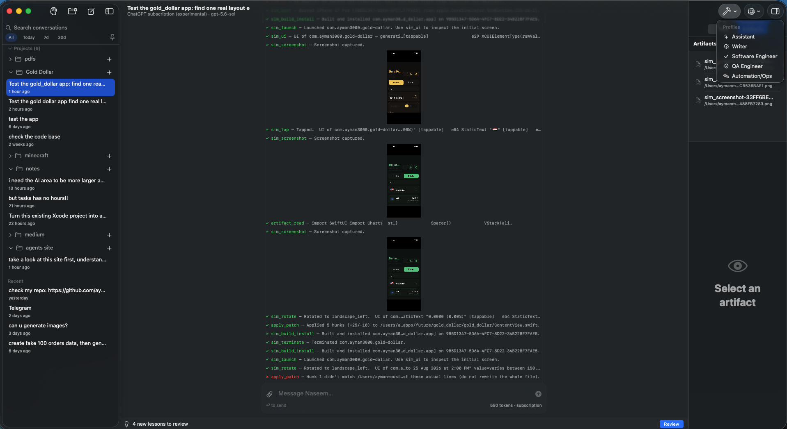
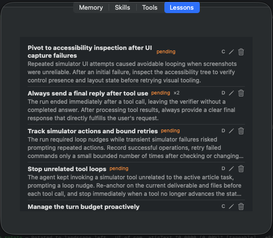
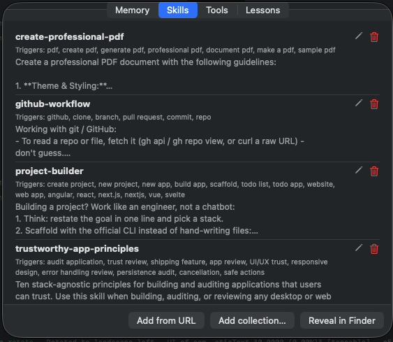

The Mac-native AI agent that does the work, not just the chat.
A fast, lightweight agent for macOS — a gentle breeze against the heavy, hot Electron assistants. Chat with any major model or fully on-device, and let it safely act on your Mac.
Free forever · No account · No subscription · Bring your own AI key
Watch Naseem fan one request out to three sub-agents in parallel, then compose the results — while its own context stays tiny.

Debug your app by asking: Naseem builds, installs, launches, taps through the UI, and screenshots the iOS Simulator — natively.
A powerful model alone isn't an agent — it needs a harness. Naseem is that harness, plus one thing browser-bound assistants don't have: your Mac.
The model provides the intelligence. The harness gives it agency. Your Mac gives it the power to act.
Most AI assistants stop at generating an answer. Naseem is built to continue — inspect the project, make the change, run the tools, read the results, verify, and fix.
Inspect, read, patch, and create files on disk. No copy-pasting between a chat window and your editor.
git, xcodebuild, package managers, tests, scripts, Python. Not a browser sandbox — your Mac's actual environment.
The way the best browser agents work: it reads the app's accessibility tree as text and acts on named elements — not by screenshotting and guessing. Faster, cheaper, and far more precise. Other coding agents shell out to simctl one command at a time; Naseem keeps one live connection and talks to your app.
The same tree-first approach through Apple's Accessibility APIs — for GUI-only apps (Notes, Mail, System Settings) that have no CLI or API.
Written entirely in Swift — no Electron, no embedded browser, no Node runtime. During a full build-and-test run it stays light while Xcode, the Simulator, and the model do the heavy lifting.
The hard part of an agent isn't answering — it's staying useful over hundreds of steps without drowning in its own context or losing the plot.
Completed tool outputs collapse to compact receipts (full text always retrievable on demand), and the request prefix stays byte-identical between steps — so your provider's prompt cache does the work. Cheaper, faster long sessions; on a subscription your quota lasts far longer.
Build logs, test runs, and search results persist across app launches. Ask about yesterday's failed build and the agent pulls up the actual log.
Each conversation carries an objective the agent re-reads on every step, with progress checkpoints so it stops grinding a stubborn subproblem and reports back.
Quit or crash mid-task and completed steps are preserved and clearly marked; continue resumes with memory of what was done.

Naseem captures lessons from failed or corrected runs — you review what it keeps.
Free is the agent you chat with and supervise. Pro is the agent you hand work to.
web_search tool for current events, docs, and prices — bring your own free Tavily or Brave key.
Skills teach Naseem how you want recurring work done — reviewed before you trust them.
Because Naseem uses your own models and API keys, buying Pro doesn't lock you into another monthly AI bill.
No account. No card.
Every install starts with a 30-day full-feature trial — no card. Keeps working on Free afterward.
Requirements: macOS 14 or later, Apple Silicon or Intel. Bring an API key (OpenAI / Anthropic / Gemini), or run Ollama, or nothing at all with on-device MLX. iOS Simulator automation requires Xcode. The app is Developer ID-signed, notarized, and updates itself.